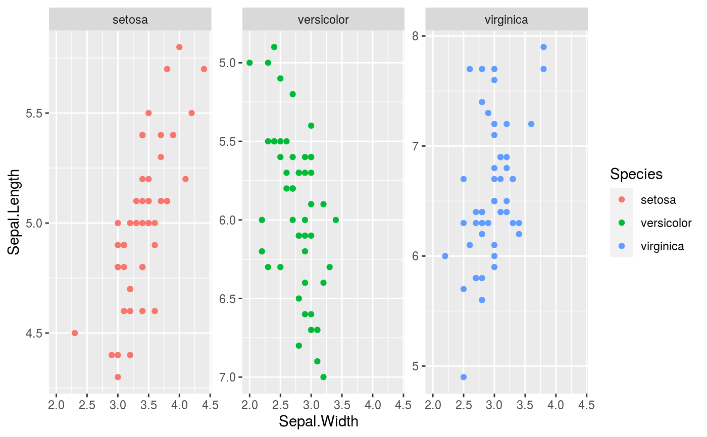
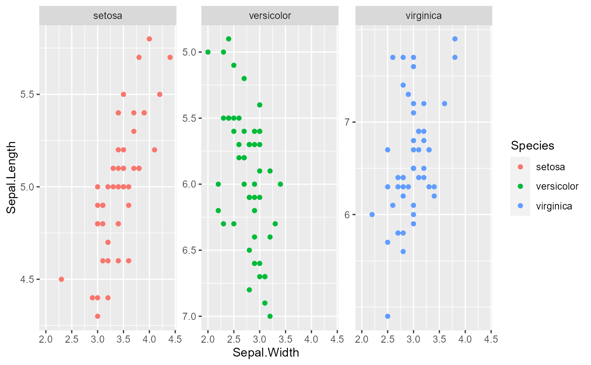

This function allows the tweaking of the position scales (x and y) of individual facets. You can use it to fine-tune limits, breaks and other scale parameters for individual facets, provided the facet allows free scales.
facetted_pos_scales(x = NULL, y = NULL)
| x, y | A |
|---|
A facetted_pos_scales object, instructing a ggplot how to adjust the scales per facet.
It is intended that this function works with both
facet_wrap and facet_grid.
For facet_wrap, the scales are used for each individual panel. For
facet_grid, the scales are used for the rows and columns. Note that
these facets must be used with scales = "free" or "free_x" or
"free_y", depending on what scales are added.
Axis titles are derived from the first scale in the list (or the default
position scale when the first list element is NULL).
It is allowed to use individual scale
transformations for facets, but this functionality comes with the trade-off
that the out of bounds (oob) argument for individual scales is
ignored. Values that are out of bounds will be clipped. Whereas the
stat part of a ggplot layer is typically calculated after scale
transformations, the calculation of the stat happens before scale
transformation with this function, which can lead to some awkward results.
The suggested workaround is to pre-transform the data for layers with
non-identity stat parts.
NULLs are valid list elements and
signal that the default position scale should be used at the position in
the list where the NULL occurs. Since transformations are applied
before facet scales are initiated, it is not recommended to use a default
position (either the first in the list, or defined outside
facetted_pos_scales()) scale with a transformation other than
trans = "identity" (the default).
The x and y arguments also
accept a list of two-sided formulas. The left hand side of a formula should
evaluate to a logical vector. The right hand side of the formula
should evaluate to a position scale, wherein the x argument accepts
x-position scales and the y argument accepts y-position scales.
Notably, the left hand side of the formula is evaluated using the tidy
evaluation framework, whereby the data.frame with the plot's layout
is given priority over the environment in which the formula was created. As
a consequence, variables (columns) that define faceting groups can be
references directly.
scale_continuous and scale_x_discrete.
plot <- ggplot(iris, aes(Sepal.Width, Sepal.Length)) + geom_point(aes(colour = Species)) + facet_wrap(Species ~ ., scales = "free_y") # Reversing the y-axis in the second panel. When providing a list of scales, # NULL indicates to use the default, global scale plot + facetted_pos_scales( y = list(NULL, scale_y_continuous(trans = "reverse")) )# Alternative for specifying scales with formula lists. The LHS can access # columns in the plot's layout. plot + facetted_pos_scales( y = list( Species == "virginica" ~ scale_y_continuous(breaks = c(6, 7)), Species == "versicolor" ~ scale_y_reverse() ) )